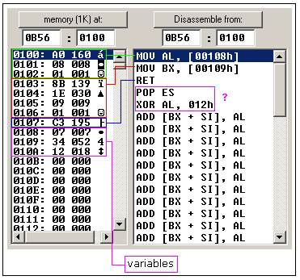
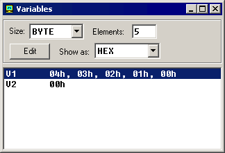

变量
变量是一个内存地址。对于编程者来说，使用诸如名称为“var1”这样的
变量保存数据远远比使用5a73:235b这样的地址容易的多。特别是当你
使用10个以上的变量的时侯。
编译器支持这两种变量 BYTE 和
WORD.（字节和字）
|
声明变量的方法： name DB value 名称 DB 值 name DW value 名称 DW 值 DB - stays for Define Byte. DW - stays for Define Word. name －可以是任何字母与数字构成，但是必须由字母 开头。可以通过不命名来声明一个没有名称的的变量（这个变量 只有地址，没有名称） value - 可以是任何数值支持三种进制(十六进制,二进制和 十进制),你可以使用"?"符号表示初始值没有确定。 |
你可能从第二章了解到， MOV 指令是将数值从源拷贝到目的。
让我们再看一个 MOV 指令的例子
#MAKE_COM# ORG 100h MOV AL, var1 MOV BX, var2 RET ; stops the program. VAR1 DB 7 var2 DW 1234h |
将上面的代码拷贝到emu8086源程序编辑器中，按下F5键编译
并在模拟器中执行。你会看到如下画面

从画面可以看出，反编译后的代码同源程序很相似，不同的是变量
被具体的内存地址取代。当编译器生成机器代码它会自动将变量名称
用该变量的便宜量代替。默认情况下，DS 寄存器存放段偏移
（当执行com文件的时侯，DS 寄存器的值同 CS 寄存器（代码段）
的值一样）。
内存第一列是偏移（offset），第二列是一个十六进制值
（hexadecimal value），第三列是十进制（decimal value），
最后一列是 ASCII 字符。
编译器是非大小写敏感的，所以 “VAR1” 同 “var1” 都是同一个变量。
VAR1变量的偏移是0108h，物理地址是0b56:0108
var2 变量的偏移是0109h，物理地址是 0b56:0109
这个变量是字，它占用2字节。这里假定低字节存放在低地址，
所以34h位于12h前面。
你可以看到，在RET指令后面还有一些指令，这样是因为反编译工具
无法判断数据从什么地方开始。同样，你可以写出直接使用DB的程序.
#MAKE_COM# ORG 100h DB 0A0h DB 08h DB 01h DB 8Bh DB 1Eh DB 09h DB 01h DB 0C3h DB 7 DB 34h DB 12h |
将上面的代码拷贝到emu8086原代码编辑器，按下F5键编译，并在
模拟器中运行，你可以看到同样的反汇编结果，得到同样的功能。
根据上面，你可以猜测，编译器将源程序转化为一些字节的集合，
这个集合被称作机器代码(machine code)，处理器懂得他们，并且
执行它们。
ORG 100是一个编译指令（它告诉编译器如何处理源代码）
当你使用变量的时侯，这条指令特别重要。它通知编译器
可执行程序将被调入偏移量是100h（256字节）的位置，
有了它，编译器就可以计算出所有变量的正确地址，然后
用这些地址（偏移量）来代替变量名称。上面的这些指令
不会真正的编译为任何机器代码。
为何可执行程序总是被装入偏移量100h?操作系统在CS寄存器
(代码段)存储着程序信息，比如命令行方式下的参数等等。
尽管上面只是一个COM文件的例子，EXE文件调入在偏移量0000
的位置，他使用特定的段保存变量。我们在下面会学习到关于
EXE文件的知识。
数组
数组可以看作是变量链。一个字符串是一个字节数组的例子，
其中每一个字符都当作一个ASCII码的值（0....255）
下面是一些定义数组的例子
a DB 48h, 65h, 6Ch, 6Ch, 6Fh, 00h
b DB 'Hello', 0
b是一个数组，当编译器发现引用了字符串值后，会自动将这些
字符转化为对应的字节。下面图表表示的就是声明数组后在内存
中的分布：

你可以使用方括号做下标直接访问到数组中的值，例如：
MOV AL, a[3]
同样，你还可以使用任意一个内存索引寄存器BX, SI, DI, BP，
例如：
MOV SI, 3
MOV AL, a[SI]
如果你想声明比较复杂的数组，你可以使用DUP指令 形式如下
number DUP ( value(s) )
number - 重复的数量（任意常数）
value - 将要复制的表达式
例如：
c DB 5 DUP(9)
就相当于如下定义：
c DB 9, 9, 9, 9, 9
另外一个例子：
d DB 5 DUP(1, 2)
等同于
d DB 1, 2, 1, 2, 1, 2, 1, 2, 1, 2
当然，如果需要存放超过255或者小于－128的数值，你还可以
使用DW来代替 DB。但是DW不能用于声明字符串。
DUP命令展开后不能超过1020个字符（上一个例子中展开之后
是13个字符），如果需要声明请将它们分成两行（这样，内存中
得到的仍然是一个大数组）。
取得变量地址
LEA指令（Load Effective Address 读取有效地址）或者OFFSET
指令。OFFSET 和 LEA二者都能够获得变量的偏移量。
LEA在使用中更有效，这是因为它能返回索引变量的地址。取得
变量地址在很多情况下是非常有用的，例如你打算向一个过程
传递参数。
注意：
在编译过程中使用如下声明数据类型
BYTE PTR - 表示字节
WORD PTR - 表示字（2个字节）
例如：
BYTE PTR [BX] ;按字节访问
or
WORD PTR [BX] ;按字访问
Emu8086 容许使用如下更简洁的前缀
b. - 等价于上面的 BYTE PTR
w. - 等价于上面的 WORD PTR
有时，编译器可以自动计算出数据类型，但是如果一个参与运算
的数是立即数，这种方法就不可靠了。
第一个例子：
ORG 100h MOV AL, VAR1 ; 将变量var1的数值放入al以便检查 LEA BX, VAR1 ; 将var1的地址存入 BX. MOV BYTE PTR [BX], 44h ; 修改变量var1的内容 MOV AL, VAR1 ; 将变量VAR1的数值放入AL以便检查 RET VAR1 DB 22h END |
下面是另外一个例子，用OFFSET指令代替LEA：
ORG 100h MOV AL, VAR1 ; 将变量VAR1的值放入AL以便检查. MOV BX, OFFSET VAR1 ; 将变量VAR1的地址放入 BX. MOV BYTE PTR [BX], 44h ; 修改变量VAR1内容 MOV AL, VAR1 ;将变量VAR1的值放入 AL以便检查. RET VAR1 DB 22h END |
上面例子的功能相同。
这些语句：
LEA BX, VAR1
MOV BX, OFFSET VAR1
都将生成同样的机器代码: MOV BX, num
num 是16位变量偏移
请注意，只有这些寄存器可以放入方括号中（作为内存指针）
BX, SI, DI, BP(请参考本教程前述章节)
常量
常量同变量很相似，但是它一直存在。定义一个变量之后，它的值
不会改变。使用EQU定义常量：
name equ <任意表达式>
例如：
|
k EQU 5 MOV AX, k |
上面的例子等同于如下代码：
| MOV AX, 5 |
在程序执行过程中你可以选择模拟器"View"菜单下的"Variables"

你可以点一个变量然后设置Elements属性为数组大小来查看数组。
汇编语言对于数据类型并不严格，这样以来所有的变量都可以被看
作是数组。
变量可以显示为下列进制
- HEX - 十六进制 hexadecimal (基底 16).
- BIN - 二进制 (基底 2).
- OCT - 八进制 (基底 8).
- SIGNED - 有符号十进制 (基底 10).
- UNSIGNED - 无符号十进制 (基底 10).
- CHAR - ASCII 码 (一共有256个符号，其中一些符号是不可见的).
之后点Edit按钮。
十六进制数值以"h"结尾，二进制以"b" 结尾，八进制以"o" 结尾
十进制没有结尾。字符串用这样的方式表示：'hello world',0
(结尾以0表示)
数组按照如下输入：
1, 2, 3, 4, 5
（数组可以是一组字节或者字，这取决于你想以字节还是字的
方式编辑）
表达式会自动计算，例如，输入如下表达式
5 + 2
会自动计算为7。等等....